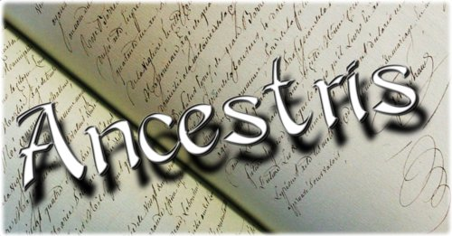

UTILISATION DE BASE
|
COMMENCER UNE GÉNÉALOGIE
|
|  | IMPORTER UNE GÉNÉALOGIE
|
LES DIFFÉRENTES FENÊTRES
|
|
UTILISATION AVANCÉE
|
|
LES AUTRES AIDES D'ANCESTRIS
|
Ancestris est un programme de généalogie
écrit en langage Java. Il fonctionne sous les systèmes
d'exploitation : Windows, Linux et Mac.
Ce logiciel est régi
par les termes de la licence GNU/GPL qui définit les logiciels
libres. Il respecte au plus près la norme GEDCOM,
ce qui facilite le partage des données avec d'autres
généalogistes.
Ancestris est un logiciel convivial et personnalisable, qui s'adapte à tous, débutants ou chercheurs expérimentés et exigeants.
Vous pourrez, créer vos fiches (familiales et
individuelles), éditer des rapports (listes, éclair,
statistiques...), stocker des informations multimédias
(images, vidéos, ...). Vous pourrez réaliser votre livre
familial, imprimer votre arbre ascendant ou descendant.
De plus,
vous aurez à votre disposition de nombreuses extensions
(plugins) telles, la vérification du format gedcom,
la géolocalisation des événements de votre
généalogie…
Sans quitter Ancestris, vous pourrez
naviguer sur le net.
Un autre point fort d'Ancestris est la multiplicité de ses aides. Selon votre besoin du moment, vous préférerez l'aide intégrée (F1), l'aide du site (Wiki, collaboratif) ou une aide type "bible" à télécharger (un B.A-BA, régulièrement réactualisé par son auteur). S'il vous reste encore une interrogation vous pourrez échanger avec les autres utilisateurs grâce à la liste de discussion.
Si vous le souhaitez, vous pourrez faire évoluer Ancestris, en donnant, à tout moment, votre avis, vos idées (liste de discussion) ou en participant à son développement.